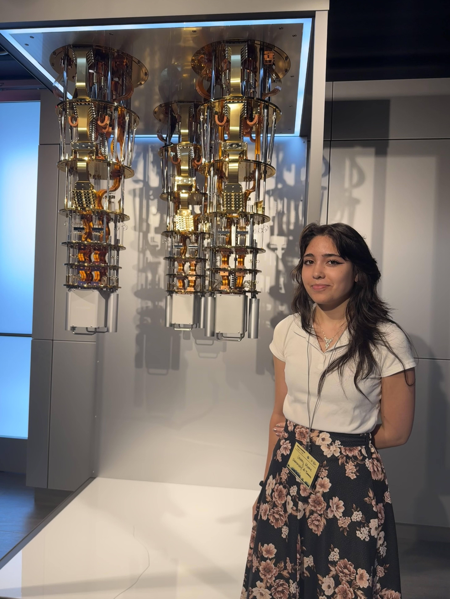
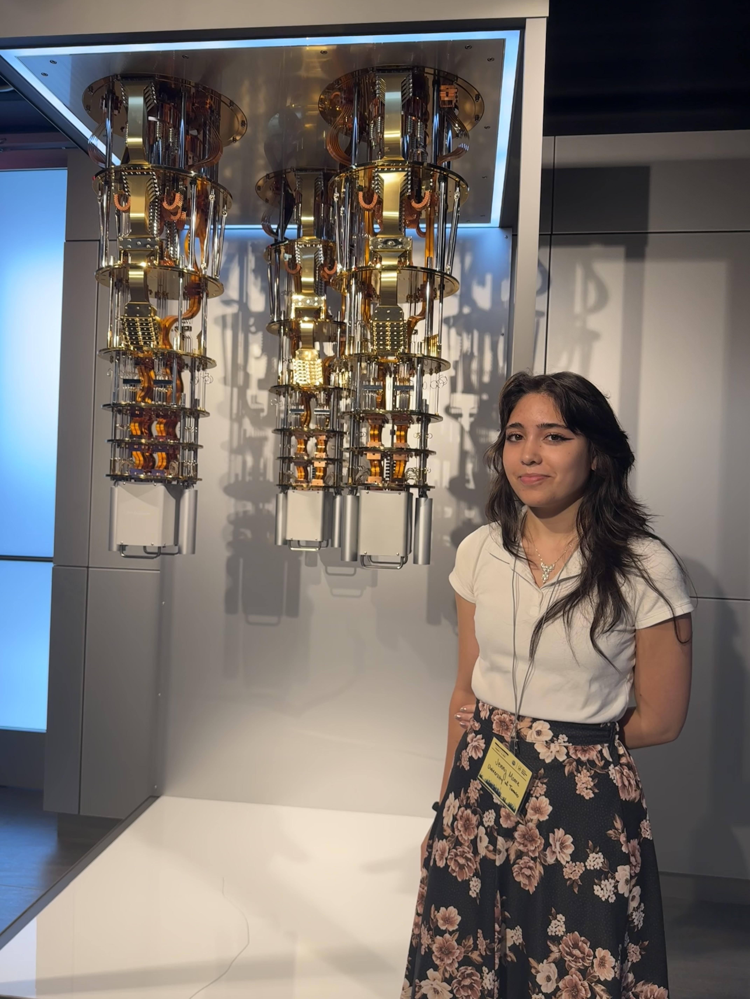

Welcome to my portfolio!
This is essentially a much extended version of my resume. It includes details and links for all my projects, courses, and other experience.
Feel free to email me at jenny.moore at mail.utoronto.ca or message me on LinkedIn for more information.
Skills
Programming Languages
- Python (Sqlite, PostgreSQL, Numpy, Matplotlib, Pandas, Qiskit, NVIDIA Warp, Pytorch, Librosa, SKLearn)
- Javascript/Typescript (HTML, CSS, React, Next.js, Prisma)
- C# (Unity)
-
Java
Experience with Java
Song Guessing Game -
MIPS Assembly
Experience with Assembly Language
Dr. Mario Remake
Other Technical Skills
-
Parallel Computing
Experience with Parallel Computing
Quantum Computing Research Systems Programming Course Physics Based Animation - Git
- LaTeX
- Linux
-
Data Analysis
Experience with Data Analysis
Quantum Computing Research Time Series Analysis Machine Learning Course Practical Physics - Quantum Computing
Soft Skills
-
Effective Communicator
Experience with Communication
Quantum Computing Research Peer Mentor Role Commons Assistant Orchestra String Quartets Code Sharing Platform Song Guessing Game Video Game Design Course - Team Player
- Mentor
-
Facilitator
Experience with Facilitation
Quantum Computing Research Peer Mentor Role Music Coaching Commons Assistant
Projects and Technical Experience
 

Under the supervision of Prof. Hans-Arno Jacobsen, I research distribution by local operations (no communication between QPUs) of the Local Unitary Cluster Jastrow (LUCJ) Ansatz. I joined the team with a CQIQC Undergraduate Summer Studentship in May of 2025 and have continued the work under a supervised physics research course: PHY479.
The LUCJ Ansatz is a quantum algorithm that approximates the solution to the electronic structure problem. Solving this gives us a lot of information about how molecules will behave, like the type of bonds that will be formed and which structures will be stable. This is useful in fields like material science or drug discovery.
However, the LUCJ suffers from a scaling problem. Current quantum processing units (QPUs) are small, noisy, and error-prone. This means that LUCJ cannot be run for large molecular systems on current devices due to the small number of quantum bits (qubits) available.
To combat this, we propose distributing the LUCJ Ansatz across two QPUs, partitioning by its spin-up (alpha-spin) and spin-down (beta-spin) molecular orbitals using quasi-probabilistic decomposition (QPD). This allows us to run systems that require more than twice as many qubits as the original LUCJ.
My role in this research has mainly been writing and maintaining our codebase, which includes preparing quantum circuits, storing details and results, sending jobs to real quantum hardware (IBM QPUs), and postprocessing the results.
Our codebase is written in Python using Qiskit and its addons, in addition to chemistry libraries like ffsim. Quantum runs are sent using Qiskit with access from PINQ2. Classical postprocessing is done on HPC clusters (AllianceCan) using parallel computing.
I originally designed and implemented a SQL database to manage experiments and results, but as we realized how dynamic the requirements of the research were (inconsistent knowledge of which values would be useful to store) the code was refactored to a simpler model.
Currently we are drafting our manuscript and finishing postprocessing for our large systems. Once published, I will link the code and manuscript here.
I've presented this research at 5 venues so far, often co-presenting with Aditya K. Rao:
- A lightning talk at CS-CAN's Canadian Celebration of Women in Computing (CAN-CWiC)
- Two posters at QSim 2025 hosted by IBM in New York City
- A poster at the annual general meeting held by Quantum Software Consortium (QSC)
- A poster at University of Toronto's Applied Research in Action (ARIA) Showcase
- A poster at the Undergraduate Engineering Research Day (UnERD)
A code-sharing platform made for a Web Development course in a team of 3 students using Typescript in a Next.js environment using React and TailwindCSS.
Website is public here: https://scriptorium-rose.vercel.app/
I only recently got around to deploying it, so I'm still working on populating the template and blog post pages!
My contributions to this project included the backend for the blog post page and the frontend for both the blog post and template pages.
To familiarize myself with Unity and C# (neither of which I'd used before), I made this game in ~12 hours. This was for a Video Game Design course, in which I will be making a more complete game with a group this semester.
You control a penguin who loves hats - collect coins to buy hats with special abilities! You can play it here (https://play.unity.com/en/games/80f35d34-bea2-4b58-a7fe-49ea2140bc4e/game-jam-1-hatformer).
.Aside from the following free Unity Asset packs, this was made entirely by me in Unity:
- Hats Pack | URP by Unity Technologies
- Animals FREE - Animated Low Poly 3D Models by Ithappy
- Hints Stars Points & Rewards Sound Effects - Lite Pack by Cyberwave Orchestra
A student-initiated project supervised by Prof. Steve Engels, inspired by my grandpa's long time struggle with choosing hearing aids.
Written in Python using librosa for audio processing, implemented a Bayesian preference learning model with botorch to allow hearing aid users to adjust settings for their own recordings - simulating challenges they may face in different environments.
Code can be found on my GitHub: https://github.com/jenny-moore/ai-adaptive-filtering
Preference learning website (deployed with streamlit) can be found here: https://hearing-aid-project-preference.streamlit.app/
A remake of the Dr. Mario game using MIPS Assembly for the CSC258 course project. Features include collision detection and handling, increasing speed as gameplay progresses, display of the next 4 randomly generated capsules, and music.
To play, use the WASD keys to guide capsules (W for rotate, ASD for left, downward and right motion) with the goal of removing all "viruses" (checkered blocks). Line up four or more blocks of the same color to eliminate them from the map.
Code not publicly available due to course policy. Available upon request.
Courses
Computer Science
Course Description: Combined course with OCAD and UofT Music. Concepts and techniques for the design and development of electronic games. History, social issues, and story elements. The business of game development and game promotion. Software engineering, artificial intelligence, and graphics elements. Level and model design. Audio elements. Practical assignments leading to team implementation of a complete game.
Course Description: Rigid body simulation, elasticity simulation, cloth simulation, collision detection and resolution and fluid simulation. Along the way, we will explore the underlying mathematics of ordinary differential equations, discrete time integration, finite element methods and more.
Course Description: An introduction to methods for automated learning of relationships on the basis of empirical data. Classification and regression using nearest neighbour methods, decision trees, linear models, and neural networks. Clustering algorithms. Problems of overfitting and of assessing accuracy.
Course Description: Concepts underlying the development of programs that operate on the web; survey of technological alternatives; greater depth on some technologies. Operational concepts of the internet and the web, static client content, dynamic client content, dynamically served content, n-tiered architectures, web development processes, and security on the web.
Course Description: Computer structures, machine languages, instruction execution, addressing techniques, and digital representation of data. Computer system organization, memory storage devices, and microprogramming. Block diagram circuit realizations of memory, control and arithmetic functions. There are a number of laboratory periods in which students conduct experiments with digital logic circuits.